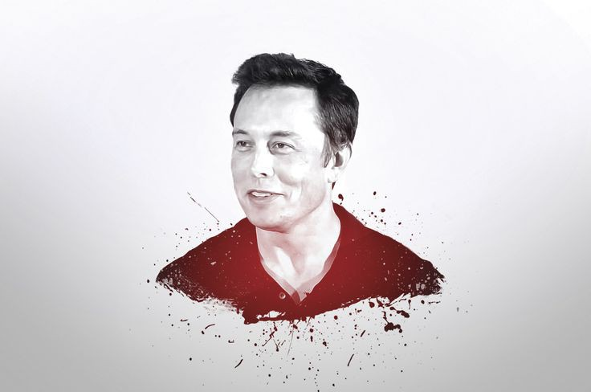

Work Experience
Chariman
SolarCity
Create a collaboration between solarCity and Tesla to use
electric vehice batteries to smooth the impact of rooftop solar on the power grid.
CEO and product Architect
Tesla Motors
Currently oversee the company's product stategy-including the disign,engineering and manufuring of more and more affordable electric vehicles for mainstream consumbers.
CEO and CTO
SpaceX
Plans to reduce space transportation costs to enable people to colonixe mars.
Oversee the development ofrockets and spacecraft for missions to earth orbit and ultimatekly to other planets.
Developed the flcon 9 spacecraft which replaced the space shuttle when it retired in 2011.
CEO
X.com and Paypal
Involved in the development of new business models,conducted a successful viral marketing camplgn,which led to a rapid increase in the number of customers.
Created a method of securely transferring mony using a recipient's e-mail address.
Co-Founder
Zip2
Created a platform where newspapers-including credible ones as New York times-could offer thir customers some additional commercial services.
Education
Bachelor of science in Economics
Wharton school of the university of pennsylvania
Bachelor of science in physics
penn's college of Arts and sciences